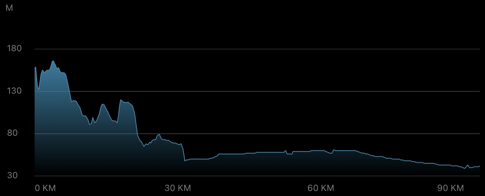
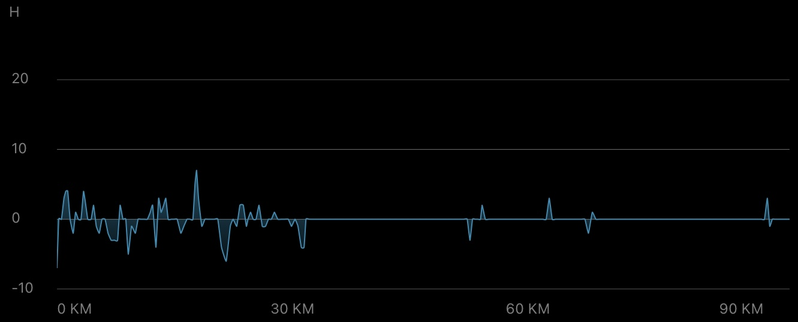
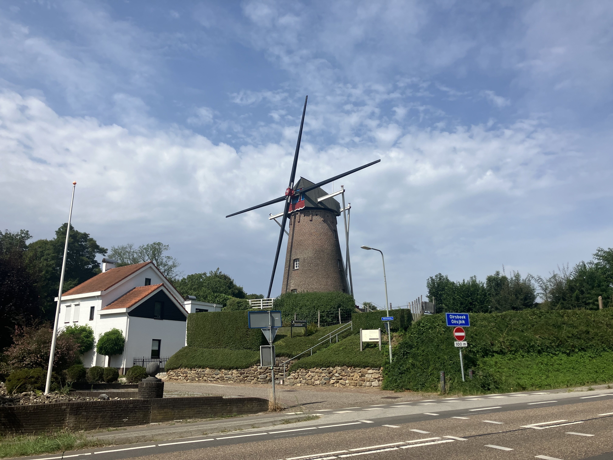
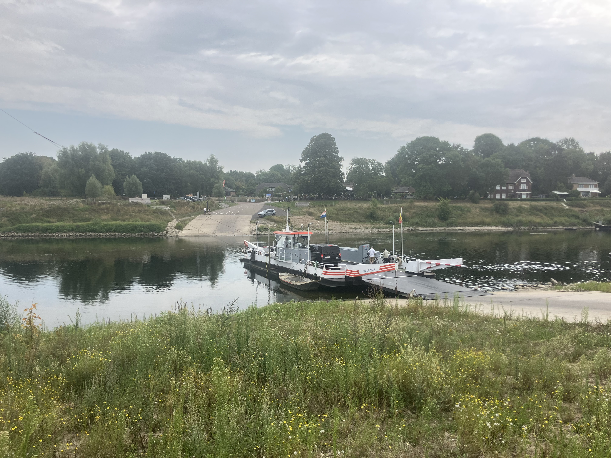
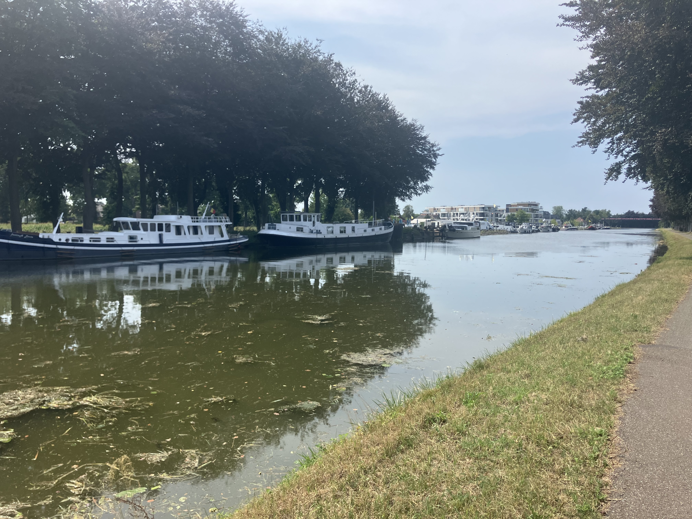

Daily Stats*
| Distance |
93.31 km |
| Time |
4:34:21 h |
| Avg. Speed |
20.39 km/h |
| Max. Speed |
34.53 km/h |
| Avg. Heart Rate |
123 bpm |
| Uphill |
189 m |
| Downhill |
317 m |
| Avg. Temperature** |
33.0 °C |

Elevation profile [m]

Slope profile [%]
*measured by Garmin Forerunner 945 & Sigma ROX 4.0
**measured at the lower back
Daybook
The sixth day of my bike trip (also the sixth leg in a row) was supposed to take me from Kerkrade on the German-Dutch border deeper into Dutch-Belgian territory and up to Eindhoven. I was actually looking forward to it that morning, because I knew there would be some changes: bike lanes, landscapes, cities and villages, the smell in the air, and above all — the slope ;-)
With a series of shorter ascents and descents, I initially meandered from Kerkrade to Heerlen and Amstenrade to Oirsbeek. There I encountered the first Dutch windmill of my trip, the Janssenmolen (see first impression). At that point, I was already grateful that the Netherlands has such high-quality bike paths, because otherwise my legs might have capitulated sooner or later.
Meanwhile, the first clouds appeared (hurray, finally clouds in the sky again!) and the weather conditions allowed me to glide effortlessly (and downhill) through Sittard. To my surprise, I crossed the border at Berg aan de Maas via a short ferry ride (second impression). An estimated 30 meters and 2 minutes later, I landed on the Belgian side and was able to continue my journey along the Grensmaas.
Although the marriage between the countryside on one side and the river on the other lasted only a few minutes, the best part of the day was yet to come after Stokkem and Dilsen: a flat, well-maintained bike path of about 20 kilometers along the Zuid-Willemsvaart canal (third impression). Many cyclists, mopeds, anglers, vacationers with their boats, and cross bridges lined the route, and even a few raindrops provided some refreshment. Well, I wouldn't go swimming in the canal, but as part of the scenery, it definitely made the ride more enjoyable! Only criticism: there was one spot where I had to push my bike (with luggage) up a narrow staircase to the bridge road above. I had to be so careful to keep the bike balanced and prevent it from sliding down the slope. My biceps were thankful ...
Around kilometer 65, I left the canal path and turned off toward Achel, from where I would soon cross the border back into the Netherlands. The cycle route here was mostly along the country road, through Valkenswaard and Waalre to Veldhoven. Finally, after a little over 90 kilometers, I arrived at my destination, exhausted from the heat and the overall strain, wet from sweat and the hot water showers I had to give myself while riding, but still happy to have arrived in “Fietsparadijs” :-)
Tomorrow will be the last leg before the weekend break (very much anticipated). Today, I would conclude, was a pleasant long-distance ride with little complexity. I would even say the only complex thing was my progressing state of exhaustion ... Charging the battery one more time, and tomorrow we will continue. Take care!
Impressions

Janssenmolen in Oirsbeek

Berg-Meeswijk ferry from the Netherlands to Belgium

Yacht pier on the Zuid-Willemsvaart canal